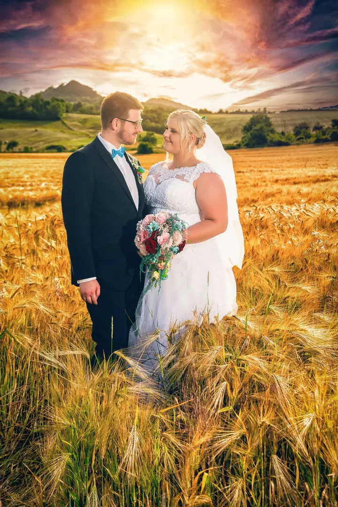
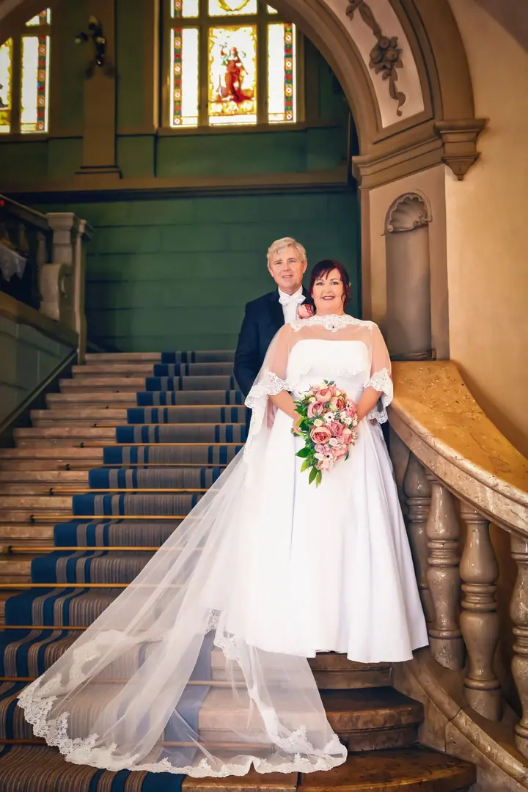
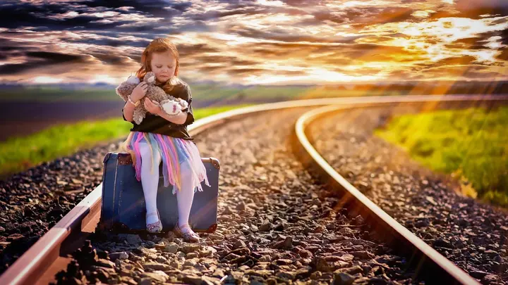

01 / 04
Svatební focení
Každý balíček obsahuje osobní schůzku a předsvatební rande focení, jehož fotky můžete použít na svatební oznámení nebo na svůj svatební web. Na přání zajistím i oblíbený fotokoutek.
Zeptat se na termín→


Svatby a lidé v teplém světle
Zeptat se na termín →(01) Ahoj
Jmenuji se Tomáš Tomášek a jsem svatební a rodinný fotograf . Svatbu vám umím nafotit i natočit a rád vyrazím ven do přírody i s celou rodinou . Ke každému páru přistupuji individuálně, aby výsledek odpovídal tomu, co si představujete.
(02) Co dělám
01 / 04
Každý balíček obsahuje osobní schůzku a předsvatební rande focení, jehož fotky můžete použít na svatební oznámení nebo na svůj svatební web. Na přání zajistím i oblíbený fotokoutek.
Zeptat se na termín→02 / 04
Rodiny s dětmi fotím venku v přírodě, kde se všichni cítí volněji. Společně vybereme místo i čas, aby fotky odpovídaly tomu, co si představujete.
Zeptat se na termín→03 / 04
Osobní i pracovní portréty, například pro firemní web nebo profesní profil. Čisté pozadí, přirozený výraz.
Zeptat se na termín→Dále nabízím
Balíček All day pokryje celý svatební den včetně příprav nevěsty a ženicha. Dostanete 20 až 30 minut videa ve Full HD a k tomu videoklip s hudbou dlouhý 3 až 7 minut.
↗(04) Postup
Od první zprávy po hotovou galerii.
Krok 1 z 4
Napište mi datum a místo svatby nebo focení. Ověřím, jestli mám volno, a pošlu vám nabídku.
Krok 2 z 4
Sejdeme se a probereme, jak si den a fotky představujete. Domluvíme rozsah, místa i případné video nebo fotokoutek.
Krok 3 z 4
Před svatbou spolu vyrazíme na předsvatební focení. Poznáme se a fotky můžete použít na svatební oznámení nebo web.
Krok 4 z 4
Ve svatební den jsem s vámi podle domluveného rozsahu. Hotové video předávám na flash disku nebo online, podle toho, co vám vyhovuje víc.
Každý pár je jiný, a tak i každé focení.
(05) Za objektivem
Pod značkou Tomasek-foto fotím hlavně svatby a rodiny. Nejvíc mě baví, když se fotky povedou tak, jak jste si je představovali, a proto spolu vždycky nejdřív mluvíme.
Každý svatební balíček začíná osobní schůzkou a předsvatebním rande focením. Poznáme se, zvyknete si na foťák a fotky z rande můžete rovnou použít na oznámení nebo na svatební web.
Kromě fotek natáčím i svatební video, na přání zajistím fotokoutek a fotím také portréty, firemní akce a produkty. Rád pracuji s barvami a s teplým světlem, ať jsme v poli, na zámku nebo v ateliéru.
Tomáš
Tomáš Tomášek · Svatební a rodinný fotograf
Svatební balíčky stojí od 8 000 do 25 000 Kč podle rozsahu. Rád vám připravím nabídku přímo pro vaši svatbu.
Každý balíček obsahuje osobní schůzku a předsvatební rande focení. Fotky z něj můžete použít na svatební oznámení nebo na svatební web.
Ano. Balíček All day za 15 000 Kč pokryje celý den včetně příprav. Video je dlouhé 20 až 30 minut ve Full HD, k tomu je videoklip na 3 až 7 minut s hudbou, kterou si můžete vybrat, a titulky se jmény, datem a místem svatby.
Ano, v případě zájmu zajistím oblíbený fotokoutek. Stačí to zmínit při domluvě.
Ano, kromě rodin a portrétů fotím také firemní akce, produkty, reality a vánoční focení.
(07) Kontakt
Napište pár vět o tom, co si představujete, a termín, který se vám hodí.